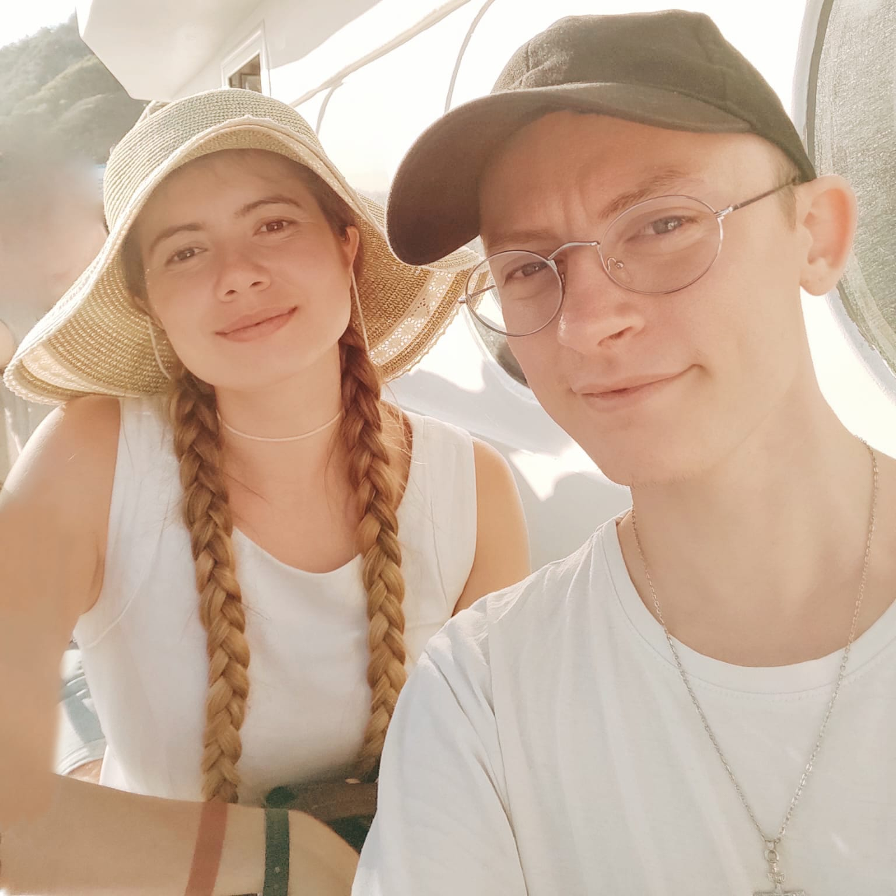
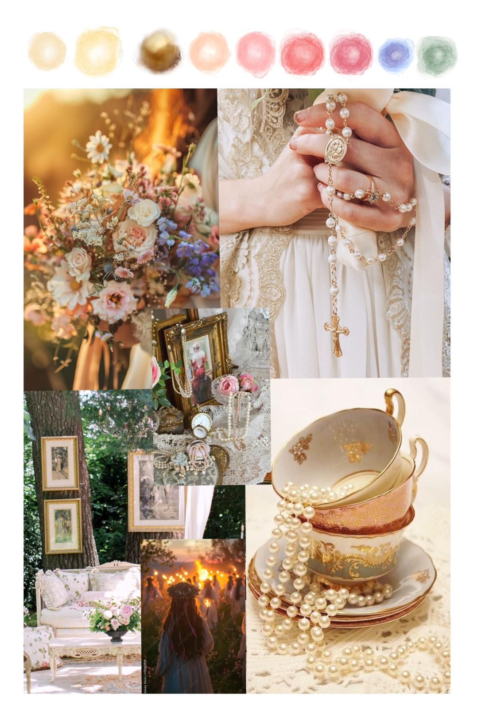
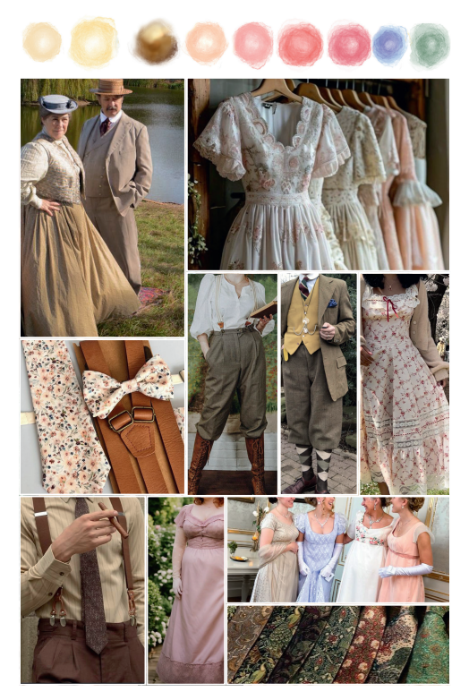

Die Zeremonie findet am 13. Juni 2026 um 14:00 Uhr in Haus Schnede, Salzhausen - Lüneburg statt.
Der Zimmerplan für die Schlafplätze ist bereits erstellt.
Da ihr keine frei Wahl bzgl. der Zimmer habt, berechnen wir hierfür keine Kosten.
Wir freuen uns allerdings, wenn ihr einen Beitrag zu den zusätzlichen Mahlzeiten + Servicepersonal beisteuert.
(Freitag Abend, Samstag Morgen, Samstag Mittag, Sonntag Morgen)
Ihr könnt uns gerne darauf ansprechen, wenn ihr wissen wollt mit wem ihr in einem Zimmer seid. Allerdings behalten wir uns vor ggf. bei Bedarf noch Änderungen am Raumplan vorzunehmen.
Wenn ihr Lust habt, unsere Hochzeit mit einer Idee, einem Beitrag oder einer kleinen Überraschung zu bereichern, freuen sich unsere Trauzeug*Innen sehr über eure Nachricht. Bitte stimmt euch dafür vorab mit ihnen ab:
Fiona Heilemann (aka Yellow) || Pronomen Sie/Ihr
Luka Krautz || Pronomen Er/dey/deren
Die entsprechenden Telefonnummern findet Ihr auf der Einladung, oder können bei Bedarf bei uns erfragt werden.
Inspiriert von einer verzauberten Gartenhochzeit wünschen wir uns Outfits im Vintage Landhaus / Cottage Core stil
Orientiert euch dafür gerne an unserem Farb & Stimmungsbild:
Vielen Dank an Robin Heller für die Komposition des Deko- und Kleidungskonzepts.


Florale Muster, natürliche Materialien und helle Farben passen wunderbar zum Stil.
Weiß- und Cremetöne sind bei unserer Hochzeit auch erlaubt und gerne gesehen.
Weitere Eindrücke findet ihr auf unserem Pinterest-Board:
Um mehr Inspirationsbilder zu sehen besucht bitte die Pinterestseite direkt.
Vielen Dank an Alle die bei der Bildersuche geholfen haben!
Die Anreise ist am Freitag ab 16 Uhr möglich. Solltet ihr erst nach 23 Uhr ankommen, dann gebt bitte unseren trauzeugenden Personen Bescheid. Alternativ könnt ihr auch am Samstag anreisen – bitte seid dann spätestens um 13:30 Uhr vor Ort.
Wenn ihr uns nicht ausdrücklich mitgeteilt habt, dass ihr bereits eine eigene Unterkunft gebucht habt, dann haben wir ein Zimmer für euch eingeplant. Wenn ihr mehr Infos darüber möchtet, dann sprecht uns gerne per WhatsApp, oder persönlich darauf an.
Ja! Weiß- und Cremetöne sind bei unserer Hochzeit ausdrücklich erlaubt und gerne gesehen.
Ja, wir werden einen Monat vor der Hochzeit noch eine Umfrage verteilen mit der man sich zu den Mahlzeiten anmelden kann.
Wir bitten allerdings darum uns bezüglich der zusätzlichen Mahlzeiten und den dazugehörigen Service finanziell zu unterstützen.
Vor Ort wird es eine kleine Box geben, auch mit einem PayPal-QR-Code. Alternativ könnt ihr den Beitrag auch zusammen mit eurem Geschenk übergeben, oder uns auf anderem Weg zukommen lassen.
Schaut gerne mal auf Vinted, oder in second-hand shops.
Suchbegriffe könnten folgend lauten:
"Sommerkleid floral",
"Cottage core [...]",
"Regency [...]",
"Floral [...]"
[Kleid, Kravatte, Fliege, Weste, Handschuhe, Hut]
Wenn ihr selbst was findet, schickt uns gerne den Link zum Shop.
Andere unserer Gäste haben ihre Kleider hier gefunden:
Vinted
Retrostage
Etsy
Cider
Amazon
Vielen Dank an Lucien Kotsi für die Aufnahme und den Schnitt dieses Videos, welches unseren besonderen Moment festhält.
Vielen Dank an Alle die durch ihre Kreativität, Mitmachbereitschaft, durch Beistand, Beratung und Sonstiges dabei geholfen haben unseren Weg in die Ehe zu begleiten und zu etwas Besonderen zu machen!